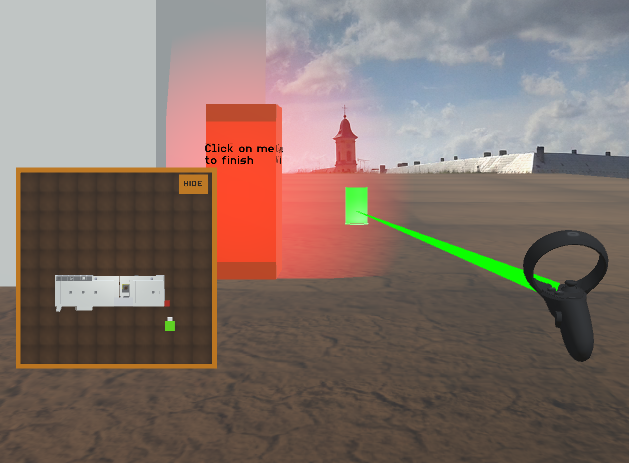
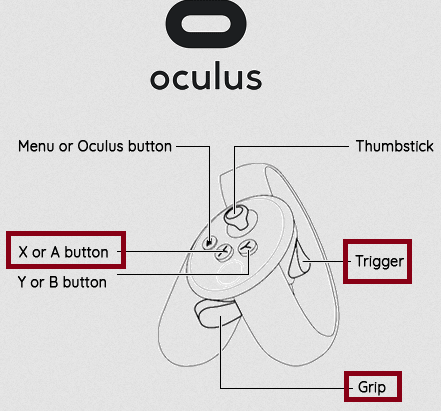

Hazard identification in a virtual worksite
An experience about the navigation techniques in a virtual world
The VR app for Oculus Quest has been released! You can download the APK here.
Informed consent
By reading the following disclaimer, submitting the form below and going on with the experiment, we consider that you give your informed consent about the following:
This webpage has been created only for academic purpose. By filling in the forms and using the application with the virtual worksite, you accept to participate in this experiment and consent to transmit the afferent data. Personal data such as names will NOT be shared, used, in any kind of communication. Only performance results from the experiment itself could be used for writing or oral communication.
Purpose of the study
This study has been created to allow evaluating some navigation techniques in a virtual environment, for the specific task of hazard identification in a worksite. These will be only fall hazards and struck-by hazards.
You will use two navigation techniques, one time each. Please do no repeat the experiment, except in case of a severe bug (crash, results not getting sent, impossibility to finish the experiment).
Pre-experiment steps
- Download and read this informative PDF about fall and struck-by hazards, available here.
- Read the tutorial about the 3D application and its commands.
The tutorial of the 3D application
What do I have to do?
- Practice time: you must move around the building using the laser emitted by the Oculus Quest controller, around the four facades and finally identify a "fake hazard" by clicking on a worker. Note that this worker is NOT in a hazardous situation, but it allows practising marking a hazard, also with the laser emitted by the Oculus Quest controller.
- 1A - First, a "direct" navigation technique is available: the laser must be on the ground, and pressing down the trigger of the controller, it moves you to the point.
When you are done, click on the red/orange panel to switch to the next navigation practice scene. - 1B - Secondly, an "indirect" navigation technique is available: the laser must be on the map, and pressing down the trigger of the controller, it moves you to the point.
When you are done, click on the red/orange panel. The next scenario is a real one, where your performance will be measured.
- 1A - First, a "direct" navigation technique is available: the laser must be on the ground, and pressing down the trigger of the controller, it moves you to the point.
- For these two real scenarios (2A and 2B):
- 2A will be with direct or indirect navigation, and 2B with the other one.
- You must navigate around the central building, and check its four facades. The other buildings around it do not have to be inspected.
- ⚠ You must identify the workers that are in an hazardous situation by putting the laser on them and then pressing down the grip of the controller. ⚠ Some workers are NOT in a hazardous situation.
- You must, when you have come back to the starting point, click on the red/orange panel to finish an inspection. Remember to do it!
- After finishing the first real scenario (2A), the second one (2B) will be loaded. You must do the same kind of inspection and also click on the panel when you are done.
This picture summarises the experiment with : 1A) and 1B) as training phases (one for each navigation) and 2A) and 2B) as real scenario phases with measures.
The commands (Quest controller)
In this application, the right controller of the Oculus Quest is used. This is emitting continuously a laser which allow to "click" on the ground, the map, or the workers, by pressing down the trigger button.
Orientation
To orient the point of view, just move your head. Take into account that you will check the 4 facades of a building, so be in a position where you can rotate 360° in total.
Stop moving
To stop moving, press once the A touch on the Oculus Quest controller.
Identify a worker in a hazardous situation
First, press once the grip touch on the Oculus Quest controller to enter "hazard mode" instead of "navigation mode". The laser will become yellow. Then, press down the trigger on the Oculus Quest controller on a worker to signal him as in a hazardous situation. To undo this, click again on him. When you are done, press again the grip touch on the Quest controller to get back to "navigation mode".
Direct navigation technique
Press down the trigger on the Oculus Quest controller on the ground to move to a point automatically. When moving is allowed, the laser is green, otherwise red.
Indirect navigation technique
Press down the trigger on the Oculus Quest controller on the map to move to a point automatically. When moving is allowed, the laser is green, otherwise red.
End
Press down the trigger on the Oculus Quest controller on the red/orange panel to end a scenario, never on the map, even in indirect navigation.
NB: You can also hide the map by putting the laser on the orange button and pressing down the trigger  , on both navigation modes. You can then unhide it again with the same button
, on both navigation modes. You can then unhide it again with the same button  .
.
When you are ready, please copy the VR app APK in your Oculus Quest, put your headset on, and start the app !
Post-experiment step
Do you have finished the experiment in your VR headset? Congratulations!
Please take few more minutes to fill a post-experiment questionnaire. For this purpose, enter the ID shown in the VR app in your headset and submit: